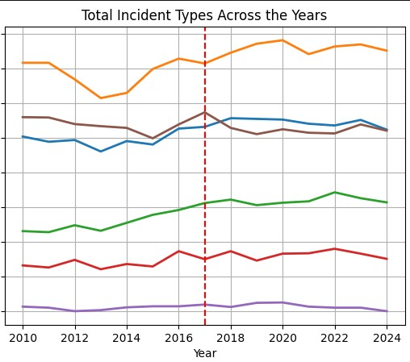
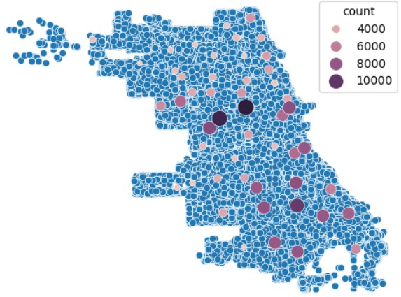

Hello! I'm Angel Moreno.
Welcome to my page -- I am currently working on this website!
I am a current Sophomore studying statistics and computer science at the University of Illinois at Urbana-Champaign.
Here, you can view my past projects, ongoing work, and more about me.
To be frank, I decided to launch this website to push myself to work on projects in my free time, as well as for the fun of it.
Nonetheless, this will be the centralized place where I keep all my data science related work.
Why data science?
I first began coding during my Sophomore year of high school. I greatly enjoyed the problem-solving aspect of things and watching my code execute line-by-line. During my Junior year of high school, I explored a bit of website and game development, trying to find a field to hone into. However, the first real step towards data science was during the summer of 2023, after I completed an introductory data science course at Discovery Partners Institute's Digital Scholar program. I immediately became immersed in the decision-making aspect of data science, as well as the beautiful visualizations I was able to make with just a few lines of code. Currently, I am a research and development intern at Discovery Partners Institute (full circle moment) working at the intersection of public health and data science. I have greatly enjoyed learning to think analytically and computationally about public health problems.
Projects


Chicago ShotSpotter Analysis - Hypothesis Testing
A deeper dive into ShotSpotter technology effectiveness, from a 14-year time frame of crime data.

Chicago Crime - EDA & Hypothesis Testing
Exploratory data analysis on a year-long time frame of Chicago crime data, in which I explore crime related temporal patterns and crime rate differences between geographic areas.